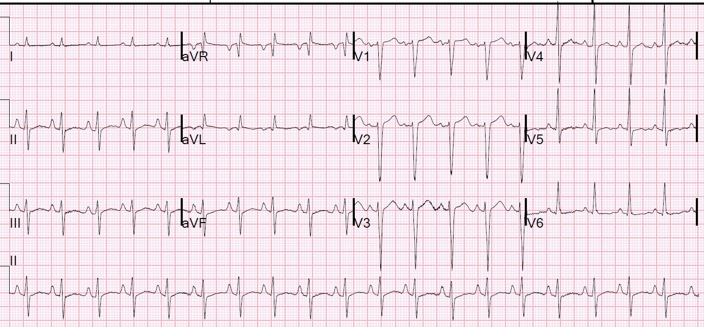
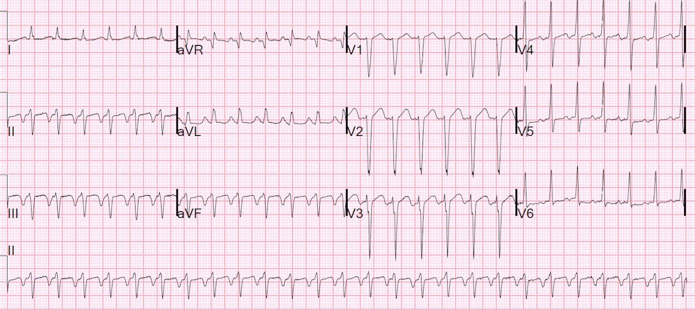
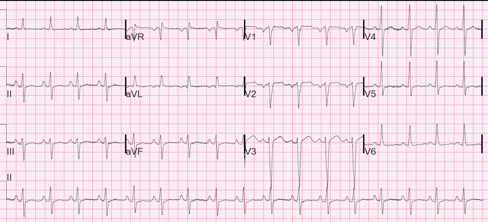
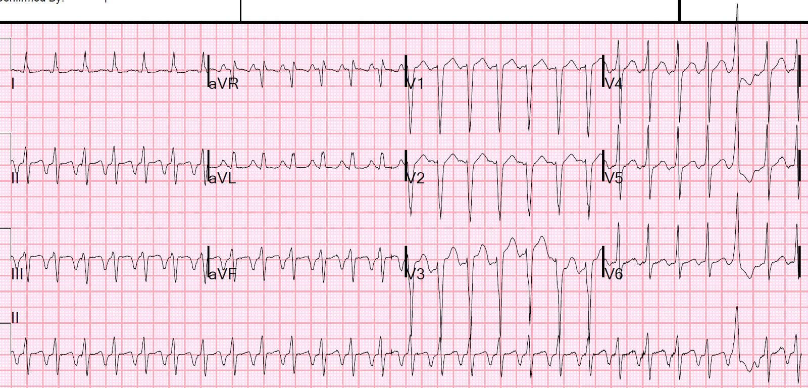
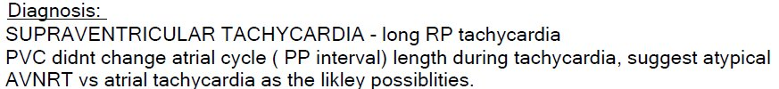
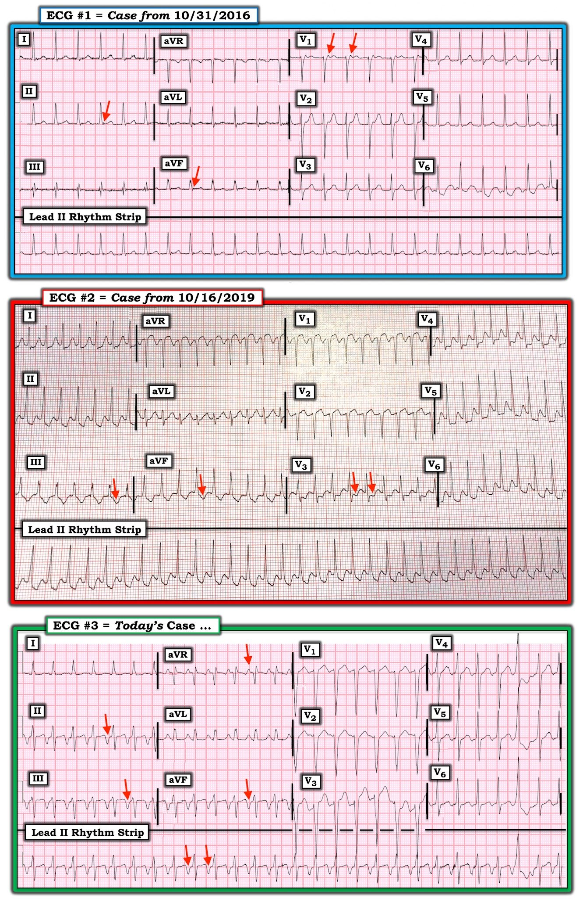
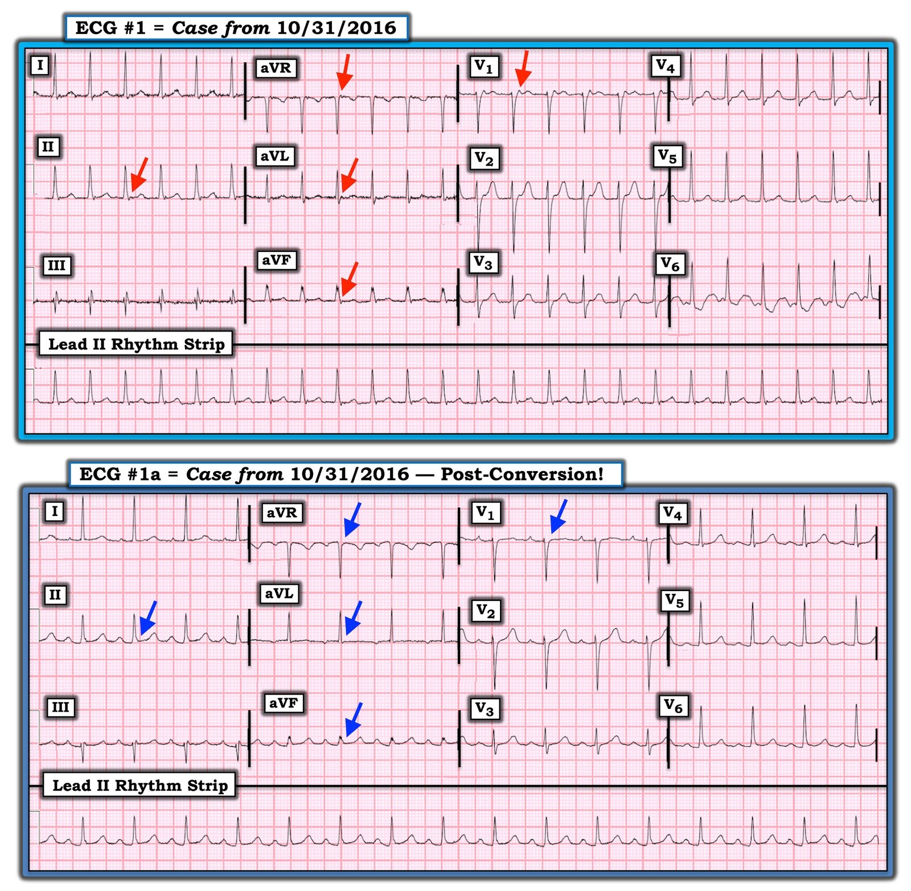
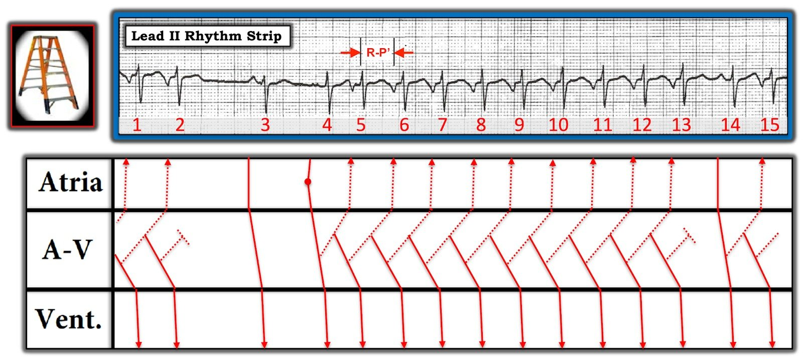
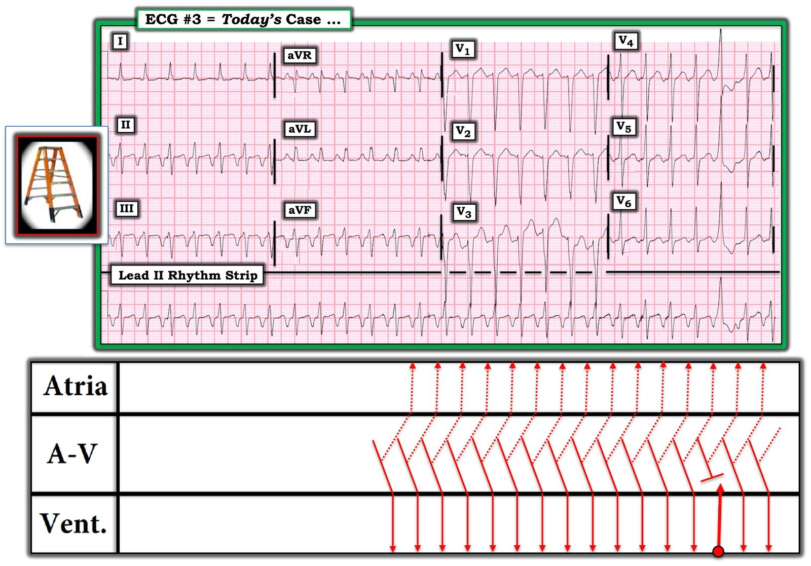

06/03/2020 — Suy tim mới khởi phát kèm các cơn SVT kéo dài tái diễn thường xuyên. Đó là gì? Xử trí thế nào?
Bản dịch tiếng Việt của bài "New Onset Heart Failure and Frequent Prolonged SVT. What is it? Management?" – Dr. Smith’s ECG Blog. Giữ nguyên toàn bộ 11 hình ảnh của bản gốc.
Người đàn ông trung niên này không có tiền sử bệnh tim nhưng có tiền sử sử dụng methamphetamine và rượu đáng kể, đến viện vì đau ngực và khó thở (SOB) nặng dần trong nhiều ngày, kèm khó thở khi nằm.
Huyết áp: 143/99, mạch 109, nhiệt độ 37.2 °C (99 °F), nhịp thở (!) 32, SpO2 95%
Khi khám, bệnh nhân thở nhanh và có ran nổ ở hai đáy phổi.
Đây là điện tâm đồ của bệnh nhân tại khoa cấp cứu (ED):


Có sóng P lớn, nhọn ở chuyển đạo II (lớn nhĩ phải)
Có trục lệch trái phù hợp với blốc phân nhánh trái trước.
Có các bất thường ST-T không đặc hiệu.
Không có bằng chứng nhồi máu hay thiếu máu cục bộ.
Troponin I là 0.054 ng/mL
NT-ProBNP là 8316 (0-900 pg/mL).
“Giá trị NT-proBNP dưới 300 pg/ml có giá trị tiên đoán âm 99% để loại trừ suy tim sung huyết. Ngưỡng 1200 pg/ml ở bệnh nhân có eGFR bình thường rất đặc hiệu cho suy tim. Ngưỡng chẩn đoán NT-proBNP 900 pg/mL đã được đề xuất ở người lớn 50-75 tuổi khi không có suy thận.”
- Đã làm siêu âm tim tại giường (POC):
- Kết quả: giảm chức năng tâm thu thất trái.
- Bệnh nhân được dùng furosemide và nhập viện.
Sau đó, bệnh nhân được làm siêu âm tim chính thức:
- Thất trái giãn rất nặng (đường kính cuối tâm trương thất trái – LVED 7.4 cm).
- Chức năng tâm thu thất trái giảm nặng với EF ước tính 20-25%.
- Không thấy rối loạn vận động thành thất trái.
- Thất phải giãn nặng và chức năng tâm thu thất phải giảm nhẹ.
- Hở van hai lá nhẹ đến vừa.
- Lớn hai nhĩ, mức độ nặng.
Việc không có bất kỳ rối loạn vận động thành nào khiến bệnh cơ tim thiếu máu cục bộ rất khó xảy ra. Vì vậy, bệnh nhân không được chụp mạch vành.
Sau đó, bệnh nhân được ghi nhận có tần số tim rất nhanh. Một điện tâm đồ được ghi lại:


Chẩn đoán của tôi (Smith) là: nhiều khả năng là nhịp nhanh nhĩ có nguồn gốc nhĩ thấp, khiến nhĩ được hoạt hóa từ dưới lên trên và hoạt động nhĩ có cực tính âm. Hãy xem ý kiến của Ken Grauer, vốn chi tiết, khác biệt và tinh tế hơn ý kiến của tôi!
(Nhưng điều đó không làm thay đổi cách xử trí nhịp này tại khoa cấp cứu, vốn sẽ bắt đầu bằng adenosine. Xem phần tóm lược nhanh của tôi về nhịp nhanh nhĩ bên dưới)
Cơn nhịp nhanh tự hết. Điện tâm đồ sau cơn nhịp nhanh tương tự điện tâm đồ đầu tiên:


Cơn nhịp nhanh tái phát rồi lại tự hết.
Bản ghi này được ghi vào ngày hôm sau:


Ở đây, bác sĩ điện sinh lý bình luận về PVC. Việc cơn nhịp nhanh đến và đi đột ngột, ở đúng cùng một tần số, cho chúng ta biết đó là nhịp “kịch phát”, nghĩa là có cơ chế vào lại. Điều này phù hợp với AVNRT (hoặc thậm chí AVRT xuôi chiều qua đường phụ), nhưng một lần nữa, sóng P âm lớn gợi ý mạnh đến nhịp nhanh nhĩ kịch phát (Paroxysmal Atrial Tachycardia – PAT).


Xem phân tích của Ken Grauer bên dưới. Ken có một phân tích rất chi tiết và cho thấy rằng, nếu không có thăm dò điện sinh lý (EP), chúng ta không thể biết đây là PAT hay AVNRT thể “nhanh-chậm” (Fast-Slow form of AVNRT). Ông nghiêng về khả năng thứ hai.
Dù sao đi nữa, bạn sẽ làm gì nếu gặp nhịp này?
Hãy thử adenosine. Thuốc có hiệu quả với nhiều dạng PAT và dĩ nhiên cả với AVNRT hoặc AVRT.
Diễn biến của bệnh nhân:
Bệnh nhân được bắt đầu dùng thuốc chẹn beta và được lên lịch thăm dò điện sinh lý.
Đáng tiếc là cuộc thăm dò điện sinh lý (EP) đó vẫn chưa được thực hiện.
Bệnh cơ tim mới khởi phát được cho là do cả việc sử dụng ma túy/rượu lẫn bệnh cơ tim do nhịp nhanh (Tachycardia-Induced Cardiomyopathy).
Đây là một bài báo toàn văn về chủ đề này trên tạp chí Clinical Cardiology năm 2008: Diagnostic Approach and Treatment Strategy in Tachycardia-induced Cardiomyopathy (Cách tiếp cận chẩn đoán và chiến lược điều trị bệnh cơ tim do nhịp nhanh)
Nhịp nhanh nhĩ (Atrial Tachycardia – AT): một SVT khác tại khoa cấp cứu
Rối loạn nhịp nhanh xuất phát từ một ổ không phải nút xoang, nằm trên nút AV.
Cuồng nhĩ là một loại nhịp nhanh nhĩ “vào lại vòng lớn” (macro-reentrant), nghĩa là vòng vào lại khá lớn, bao quanh phần lớn tâm nhĩ, và bạn thực sự có thể thấy vòng đó trên điện tâm đồ bề mặt 12 chuyển đạo dưới dạng sóng cuồng nhĩ.
Các loại cuồng nhĩ khác là: [người dịch: nguyên văn ghi “atrial flutter”, nhiều khả năng ý là các loại nhịp nhanh nhĩ khác]
1. Vào lại vòng nhỏ (micro-reentrant) (nhịp nhanh nhĩ kịch phát — PAT), tạo ra sóng nhĩ có thể giống sóng P, nhưng lớn hơn hoặc đảo ngược, với hình dạng khác.
2. Tự động (nút xoang cũng là một nhịp tự động). Nhịp tự động không thể bị cắt bằng adenosine. Chúng dựa vào khử cực pha 0 cho tới khi đạt ngưỡng. [người dịch: khử cực tự phát tới ngưỡng thường được mô tả là khử cực tâm trương ở pha bốn]
3. Khởi kích (triggered)
Những nhận định chung về AT
•Đều, tần số 150-250
•Sóng P’ (lạc chỗ) đứng trước QRS (hình dạng khác),
khoảng P’-R hằng định
•Nhịp nhanh vào lại nút xoang
•Tự động (NPAT – nhịp nhanh nhĩ không kịch phát), do kích thích adrenergic lên mô nhĩ bình thường
•Khởi phát từ từ
•Bị adenosine ức chế thoáng qua
•Vào lại (kịch phát, PSVT, PAT)
•Khởi phát đột ngột
•Vào lại trong nhĩ
•Tâm nhĩ bất thường, đặc biệt sau phẫu thuật nhĩ
•Không bị adenosine cắt cơn (0/13 bệnh nhân, gồm 8 ca cuồng nhĩ)
•Sốc điện có hiệu quả
•Vào lại nút xoang – (ngay trong nút xoang!) Adenosine có hiệu quả
•Khởi kích (kịch phát)
•Bệnh cơ tim, đang dùng digoxin, thường kèm một mức độ blốc AV
•Kéo dài và khó điều trị
Nguyên nhân
Rối loạn điện giải, rối loạn toan-kiềm, ngộ độc thuốc, sốt, thiếu oxy, bệnh tuyến giáp, phẫu thuật tim
•Ngộ độc digitalis
•Điều chỉnh hạ kali máu, Digibind
Xử trí
Điều chỉnh rối loạn nền
•Thuốc chẹn beta hoặc thuốc chẹn kênh calci
•Mg (2-4 g tĩnh mạch)
•Adenosine đôi khi cắt được cơn
•Vào lại nút xoang hoặc hoạt động khởi kích
•Hiếm khi cần điều trị bằng điện
•50-100 J nếu không ổn định
•Tạo nhịp nhĩ vượt tần số (overdrive) qua tĩnh mạch
Adenosine:Nhịp nhanh nhĩ
PAT
hiệu quả: tùy thuộc nguyên nhân
•Tự động (làm chậm thoáng qua)
•Vào lại ở mô nhĩ không phải nút xoang (không có tác dụng, như trong cuồng nhĩ)
•Vào lại trong nút xoang (cắt cơn)
•Khởi kích – có hiệu quả
•Tế bào cơ nhĩ
•Rút ngắn thời gian điện thế hoạt động của nhĩ
•Không gây tăng phân cực
•Không có tác dụng lên vào lại trong nhĩ
•Nút xoang
•Tăng phân cực
•Cắt PAT do vào lại nút xoang
•Ức chế tạm thời nhịp xoang
•Rút ngắn thời gian điện thế hoạt động của nhĩ
•Kháng adrenergic – ức chế cAMP – cắt hoạt động khởi kích do cAMP
•Cứ thử xem
Tóm tắt về adenosine trong nhịp nhanh nhĩ
–Adenosine cắt được một số cơn PAT kịch phát, nhưng không phải tất cả.
–Bạn có thể không biết rằng cơn PSVT đó là PAT
–Nếu adenosine không có hiệu quả với SVT
Đó có thể là nhịp nhanh nhĩ
–Nếu adenosine có hiệu quả với PAT
Bạn sẽ nghĩ mình đã điều trị AVNRT
–Nếu bạn chẩn đoán được PAT
Adenosine đáng để thử

===================================
BÌNH LUẬN CỦA TÔI, bởi KEN GRAUER, MD (6/3/2020):
===================================
Một ca thú vị: bệnh nhân bị bệnh cơ tim giãn nặng + lạm dụng rượu, đến khoa cấp cứu (ED) vì suy tim mất bù cấp + một cơn SVT ( = nhịp nhanh trên thất – SupraVentricular Tachycardia). Tôi tập trung Bình luận của mình vào việc xác định nguyên nhân của rối loạn nhịp nhanh ở bệnh nhân này — và so sánh nó với các nhịp SVT khác đã đăng trước đây trên Dr. Smith’s ECG Blog.
- Dr. Smith trình bày 4 bản ghi của bệnh nhân trong Ca hôm nay (đã trình bày ở trên) — bản ghi thứ 2 và thứ 4 cho thấy cùng một rối loạn nhịp nhanh. Vì bản ghi thứ 4 (ghi ở bệnh nhân này vào ngày hôm sau) bắt được một PVC gần cuối bản ghi — tôi chọn dùng bản ghi thứ 4 này để bàn luận (nhằm minh họa việc một PVC xuất hiện trong lúc đang có nhịp SVT có thể giúp ích cho chẩn đoán như thế nào).


LƯU Ý: Tôi bắt đầu với Hình 1 — trong đó tôi trình bày 3 ví dụ về nhịp SVT đều, trong đó sóng P xoang (tức là sóng P dương ở chuyển đạo II) không được nhìn thấy:
- Điện tâm đồ #1 trong Hình 1 lấy từ bài ngày 31 tháng Mười năm 2016 trên Blog của Dr. Smith.
- Điện tâm đồ #2 trong Hình 1 lấy từ bài ngày 16 tháng Mười năm 2019 trên Blog của Dr. Smith.
- Điện tâm đồ #3 trong Hình 1 là bản ghi thứ 4 đã trình bày ở trên, lấy từ Ca hôm nay.
Để bạn đọc tham khảo — tôi đã thêm một số mũi tên ĐỎ vào từng bản ghi trong 3 bản ghi ở Hình 1. Xin nhắc lại — mỗi bản ghi này đều cho thấy một nhịp SVT đều, trong đó sóng P xoang (tức là sóng P dương ở chuyển đạo II) không được nhìn thấy.
CÂU HỎI:
- Về các mũi tên ĐỎ trong Hình 1 — Điểm chung của từng bản ghi trong 3 bản ghi này là gì?
- Các mũi tên ĐỎ trong 3 bản ghi này có gì khác nhau?
- Các khả năng chẩn đoán (và xác suất) trong mỗi ca là gì?
- Về mặt lâm sàng — TẠI SAO điều này lại quan trọng?
Những suy nghĩ chung về chẩn đoán SVT trên điện tâm đồ (ECG):Thuật ngữ “SVT” ( = nhịp nhanh trên thất – SupraVentricular Tachycardia) thường bị hiểu sai. Đây là một thuật ngữ “chung”. Ý tôi là — thuật ngữ này bao gồm tất cả các rối loạn nhịp có tần số “nhanh” (Tachycardic) (tức là ≥100/phút ở người lớn) — và có nhịp “trên thất” (SupraVentricular) (tức là xuất phát tại hoặc trên nút AV).
- Thuật ngữ: Nhiều người hành nghề (kể cả những người đã có kinh nghiệm) — dùng thuật ngữ “SVT” khi nói về một nhịp nhanh vào lại trên thất (tức là AVNRT hoặc AVRT). Nhưng vì thuật ngữ “SVT” thực ra bao gồm tất cả các rối loạn nhịp có tần số ≥100/phút xuất phát tại hoặc trên nút AV — thuật ngữ này cũng bao gồm nhịp nhanh xoang + nhịp nhanh bộ nối + rung nhĩ (AFib), cuồng nhĩ (AFlutter) và MAT (nhịp nhanh nhĩ đa ổ – Multifocal Atrial Tachycardia) NẾU đáp ứng thất trung bình đủ nhanh + nhịp nhanh nhĩ tự động (ATach) + một số nhịp SVT khác ít gặp hơn, chẳng hạn nhịp nhanh vào lại nút xoang nhĩ.
- Phần lớn các nhịp SVT có phức bộ QRS hẹp. Dù vậy — một nhịp SVT có thể có QRS rộng nếu có hoặc blốc nhánh có sẵn từ trước hoặc dẫn truyền lệch hướng do tần số nhanh.
- Trên thực tế mà nói — chẩn đoán phân biệt chính của một nhịp SVT đều, trong đó sóng P xoang (tức là sóng P dương rõ ràng ở chuyển đạo II) không hiện rõ, bao gồm: i) Nhịp nhanh xoang (NẾU có khả năng sóng P xoang đang ẩn trong sóng ST-T đứng trước); ii) Một nhịp SVT vào lại (hoặc là AVNRT nếu vòng vào lại nằm gọn trong nút AV — hoặc AVRT nếu có sự tham gia của một AP [đường phụ – Accessory Pathway] nằm ngoài nút AV); iii) Nhịp nhanh nhĩ; hoặc iv) Cuồng nhĩ với dẫn truyền AV 2:1.
- Tần số tim có thể giúp ích! Tôi đã ôn lại chi tiết Cách tiếp cận hệ thống của tôi trong việc đọc nhịp trong Bình luận của tôi ở bài ngày 16 tháng Mười năm 2019 trên Dr. Smith’s ECG Blog. Nói ngắn gọn — i) NẾU tần số tim ở người lớn là ≥170/phút — thì cả nhịp nhanh xoang lẫn AFlutter đều trở nên ít có khả năng hơn (tức là không phải là không thể! — nhưng ít khả năng hơn); — NHƯNG — ii) NẾU tần số tim của một nhịp SVT đều ở người lớn gần với ~150/phút (tức là ~140-160/phút) — thì bất kỳ thực thể nào trong 4 thực thể nêu trên đều phải được cân nhắc trong chẩn đoán phân biệt!
- Phát hiện hoạt động nhĩ! — Trước đây tôi đã ôn lại việc dùng compa đo (calipers) có thể giúp phát hiện dẫn truyền AV 2:1, vốn có giá trị chẩn đoán AFlutter (xem Bình luận của tôi trong bài ngày 12 tháng Mười Một năm 2019 trên Dr. Smith’s ECG Blog). Như chúng ta sẽ thấy bên dưới — việc phát hiện hoạt động nhĩ ngược dòng có thể có giá trị chẩn đoán một nhịp SVT vào lại.
- ĐIỂM THEN CHỐT (PEARL) #1 — Hãy tìm một “chỗ ngắt” (hoặc một thay đổi tinh tế) trong nhịp! — Ngay cả một khoảng ngưng nhẹ trong nhịp cũng có thể là tất cả những gì cần thiết để bộc lộ hoạt động nhĩ nền vốn bị cơn nhịp nhanh che khuất. Ví dụ — ĐIỀU GÌ xảy ra ở gần cuối bản ghi trong điện tâm đồ #3?
- ĐIỂM THEN CHỐT (PEARL) #2 — Hãy tìm lúc “khởi phát” (và/hoặc lúc kết thúc) của nhịp! — Manh mối MẤU CHỐT để tìm nguyên nhân của một SVT thường nằm ở việc ghi lại được hoặc lúc bắt đầu và/hoặc lúc kết thúc của SVT. ATach thường khởi phát từ từ, với ổ lạc chỗ tăng tốc dần (tức là hiện tượng “khởi động” (warm-up)). Sau đó, nhịp có thể chậm dần (tức là “hạ nhiệt (cool-down)”) khi kết thúc. Ngược lại — Các nhịp SVT vào lại (reentry) thường bắt đầu bằng 1 hoặc nhiều PAC bị blốc dẫn truyền xuống một trong các đường dẫn truyền của nút AV, thiết lập vòng vào lại khi xung động bắt đầu đi xuống đường còn lại. Khởi phát của SVT vào lại thường đột ngột (tức là đây là lý do cho thuật ngữ trước đây dùng để gọi nhịp này = PSVT = SVT kịch phát (Paroxysmal SVT)). Sự kết thúc của vòng vào lại thường nhanh — dù điều này có thể diễn ra qua vài nhát.
- “Tin vui” về điều trị SVT — Đúng là việc xác định chẩn đoán nhịp cụ thể giúp thuận lợi cho việc xử trí. Điều này đặc biệt quan trọng NẾU nhịp hóa ra là nhịp nhanh xoang — khi đó, tìm và điều trị nguyên nhân nền gây nhịp nhanh xoang là MẤU CHỐT để xử trí tối ưu. Cũng đúng là các thuốc chống loạn nhịp khác nhau có thể được dùng hơi khác nhau, tùy theo chẩn đoán nhịp cụ thể. Tuy nhiên, về mặt thực hành — các biện pháp điều trị ban đầu ngoài hiện trường hoặc tại khoa cấp cứu đều khá giống nhau đối với hầu như tất cả các nhịp nêu trên = Cân nhắc nghiệm pháp cường phế vị và/hoặc dùng một thuốc ức chế nút AV (tức là verapamil/diltiazem, thuốc chẹn ß, adenosine).
Còn các mũi tên ĐỎ trong Hình 1 thì sao? — Cả 3 bản ghi trong Hình 1 đều cho thấy một nhịp SVT đều, trong đó sóng P xoang (tức là sóng P dương ở chuyển đạo II) không được nhìn thấy rõ.
- Điện tâm đồ #1 — cho thấy một SVT đều với tần số ngay dưới 150/phút. Sóng lệch dương ở gần điểm giữa khoảng R-R ở chuyển đạo II gần như chắc chắn chỉ là sóng T. Điều chống lại khả năng có một sóng P xoang ẩn bên trong sóng T này — là thực tế rằng khi đó khoảng PR sẽ dài (tức là ~0,26 giây) — trong khi nếu có thay đổi thì khoảng PR lại ngắn đi khi có nhịp nhanh. Dù tần số ~150/phút nên khiến bạn nghĩ tới khả năng cuồng nhĩ (AFlutter) — nhưng ngoài chuyển đạo V6, không chuyển đạo nào trong 11 chuyển đạo còn lại gợi ý, dù chỉ mơ hồ, tới dẫn truyền AV 2:1. Các mũi tên ĐỎ trong điện tâm đồ #1 — gợi ý dẫn truyền nhĩ ngược dòng với khoảng RP’ rất ngắn (RP’ << PR), tạo khía ở phần cuối phức bộ QRS (với một sóng lệch dương ở chuyển đạo V1 — và — gợi ý có một khía âm ở mỗi chuyển đạo thành dưới). Rất ít khả năng đây là nhịp nhanh nhĩ (ATach) — vì nếu sóng lệch dương đó ở chuyển đạo V1 là một sóng P dẫn truyền xuôi thì khoảng PR sẽ dài quá mức. Điều này để lại chẩn đoán có khả năng nhất cho điện tâm đồ #1 là một nhịp SVT vào lại (tức là AVNRT hoặc AVRT).
- Điện tâm đồ #2 — cho thấy một SVT đều với tần số ~210/phút. Tần số này quá nhanh để là nhịp nhanh xoang. Nó cũng quá nhanh để là cuồng nhĩ dẫn truyền AV 2:1 — vì khi đó tần số nhĩ sẽ = 210 X 2 = 420/phút, nhanh hơn nhiều so với tần số nhĩ tối đa của cuồng nhĩ. Cuồng nhĩ dẫn truyền AV 1:1 cực kỳ hiếm gặp, và tần số cuồng 210/phút sẽ chậm một cách bất thường trừ khi bệnh nhân đang dùng thuốc chống loạn nhịp. ATach là có thể, nhưng khi không có dấu hiệu rõ ràng của sóng P lạc chỗ — thì ATach ít có khả năng hơn nhiều so với một SVT vào lại, vốn là một nhịp phổ biến hơn nhiều. Dù khó chứng minh chỉ từ một bản ghi duy nhất này — tôi nghi rằng các mũi tên ĐỎ trong điện tâm đồ #2 (đánh dấu những sóng lệch có lẽ là âm ở các chuyển đạo thành dưới, với góc gập sắc ở chuyển đạo V3) biểu hiện dẫn truyền nhĩ ngược dòng với khoảng RP’ dài vừa phải (RP’ vẫn <PR), xuất hiện khá sau phức bộ QRS (nằm trong phần sau của đoạn ST).
- Điện tâm đồ #3 (là Ca bệnh hôm nay) — cho thấy một SVT đều với tần số ~160/phút. Có một đoạn dốc lên chậm, từ từ tới và vượt quá đoạn ST, dẫn lên một sóng P âm rất sâu (được đánh dấu bằng mũi tên ĐỎ) đứng trước QRS ở mỗi chuyển đạo thành dưới. Sóng lệch đứng trước QRS này dương ở chuyển đạo aVR. Sóng P âm ở các chuyển đạo thành dưới loại trừ nhịp nhanh xoang. Việc không có hoạt động nhĩ 2:1 loại trừ cuồng nhĩ. Về cơ bản, điều này khiến chúng ta phải chọn giữa ATach (khi đó ta sẽ phải giả định có những sóng P âm khổng lồ) và AVNRT với dẫn truyền nhĩ ngược dòng có khoảng RP’ rất dài (RP’ rõ ràng > PR).
TỔNG HỢP LẠI TẤT CẢ: Cả 3 bản ghi trong Hình 1 đều cho thấy một SVT đều với sóng P ngược dòng. MẤU CHỐT để xác định căn nguyên có khả năng của từng nhịp nằm ở độ dài tương đối của khoảng RP’:
- Điện tâm đồ #1 trong Hình 1 cho thấy khoảng RP’ rất ngắn, trong đó sóng P ngược dòng làm biến dạng phần cuối phức bộ QRS. Điều này gần như chẩn đoán xác định thể “chậm-nhanh” của AVNRT — trong đó xung động trước hết đi xuống theo đường “chậm” trong nút AV — rồi quay ngược lên theo đường “nhanh” trong nút AV. Chính vì xung động quay ngược lên (tức là ngược dòng) qua đường “nhanh” trong nút AV mà khoảng RP’ ngắn như vậy. Thể “chậm-nhanh” là thể AVNRT phổ biến nhất, đến mức chúng ta thường mặc định là dẫn truyền “chậm-nhanh” khi chỉ nói “AVNRT”.
- Điện tâm đồ #2 trong Hình 1 cho thấy khoảng RP’ dài vừa phải. Điều này gợi ý có thể có một AP (đường phụ – Accessory Pathway) tham gia vào vòng vào lại. Vì AP nằm bên ngoài nút AV — nên thời gian để xung động đi hết vòng vào lại và dẫn truyền ngược về nhĩ (ngược dòng) dài hơn so với khi toàn bộ vòng vào lại nằm bên trong nút AV. Kết quả là sóng P ngược dòng thường được thấy nằm trong đoạn ST, thay vì tạo khía ở phần cuối phức bộ QRS. Một điện tâm đồ theo dõi đã được ghi trong ca ngày 16 tháng Mười năm 2019 này, và quả thực đã cho thấy WPW.
- Điện tâm đồ #3 trong Hình 1 là bản ghi thứ 3 được trình bày trong Ca bệnh hôm nay [người dịch: ở phần trên tác giả gọi đây là bản ghi thứ tư]. Nó hoặc cho thấy khoảng RP’ rất dài hoặc là một nhịp nhanh nhĩ (đang chờ thăm dò điện sinh lý (EP) để xác định là khả năng nào). NẾU đây thực sự là một khoảng RP’ rất dài — thì đây sẽ là thể “nhanh-chậm” ít gặp của AVNRT — trong đó xung động trước hết đi xuống theo đường “nhanh” trong nút AV — rồi quay ngược lên theo đường “chậm” trong nút AV. Dẫn truyền ngược dòng lên qua đường “chậm” trong nút AV sẽ giải thích cho khoảng RP’ rất dài.


ĐIỂM THEN CHỐT (PEARL) #3 — Cách TỐT NHẤT để chứng minh rằng các sóng lệch đáng ngờ thực sự phản ánh dẫn truyền nhĩ ngược dòng trong một SVT là ghi một bản ghi sau chuyển nhịp. Việc này đã được thực hiện trong ca ngày 31 tháng Mười năm 2016 trên Dr. Smith’s ECG Blog:
- Để rõ ràng — tôi đã đưa lại bản ghi sau chuyển nhịp này trong Hình 2. Việc các sóng lệch đáng ngờ trong lúc nhịp SVT (mũi tên ĐỎ trong điện tâm đồ #1) không còn hiện diện sau khi chuyển về nhịp xoang (mũi tên XANH LAM trong điện tâm đồ #1a) chứng minh rằng quả thực đã có dẫn truyền nhĩ ngược dòng với khoảng RP’ rất ngắn trong điện tâm đồ #1. Điều này xác nhận chẩn đoán thể “chậm-nhanh” của AVNRT.
Minh họa cho ĐIỂM THEN CHỐT (PEARL) #2 (đã bàn ở trên) — được thấy rõ trong Hình 3, trong đó giản đồ bậc thang (laddergram) làm nổi bật cơ chế ở bệnh nhân bị thể “nhanh-chậm” của AVNRT.
- Lưu ý rằng chúng ta thấy được sự khởi phát của nhịp nhanh trong Hình 3. Sau một nhát xoang (tức là nhát #3) — một PAC (tức là nhát #4) khởi động quá trình.
- PAC này có lẽ gặp đường chậm trong nút AV đang sẵn sàng cho dẫn truyền ngược dòng ngay vào lúc nó đang đi xuống thất (tức là các đường nét đứt, xiên trong Tầng Nút AV). NẾU thời điểm “vừa khớp” (như trong Hình 3) — thì một vòng vào lại sử dụng đường chậm trong nút AV (tạo ra khoảng RP’ rất dài) có thể được thiết lập.
- Tôi không chắc vì sao AVNRT “nhanh-chậm” này kết thúc sau nhát #13 (có lẽ vì khoảng R-R của nhát #12-13 ngắn hơn một chút so với các khoảng R-R trước đó trong lúc nhịp nhanh?).
- Sau 1 nhát xoang ( = nhát #14) — có vẻ như AVNRT “nhanh-chậm” lại bắt đầu.


GIẢ THUYẾT CỦA TÔI cho Ca bệnh hôm nay: Như đã bàn ở trên — chẩn đoán phân biệt chính cho điện tâm đồ #3 ( = Ca bệnh hôm nay) là giữa ATach và thể “nhanh-chậm” của AVNRT. Chẩn đoán xác định sẽ được đưa ra bằng thăm dò điện sinh lý. Tôi đã đề xuất một giản đồ bậc thang cho điện tâm đồ #3. Tôi xin nêu những điểm cuối cùng sau đây:
- Chúng ta không thấy được sự khởi phát của nhịp trong Hình 4. Điều này thật đáng tiếc — vì nhiều khả năng sự khởi phát của nhịp nhanh này sẽ cung cấp một manh mối mạnh về căn nguyên của nhịp.
- Một “thay đổi” trong nhịp xảy ra gần cuối bản ghi dưới dạng một PVC. Vì AVRT là vào lại có sự tham gia của một AP nằm bên ngoài nút AV — nên một PVC sẽ có khả năng cắt ngang chu trình vào lại cao hơn. Ngược lại — một PVC sẽ có khả năng cắt ngang thấp hơn đối với một SVT vào lại nằm hoàn toàn bên trong nút AV (như xảy ra với cả thể “chậm-nhanh” lẫn thể “nhanh-chậm” của AVNRT).
- Tôi đã vẽ giản đồ bậc thang để minh họa thể “nhanh-chậm” của AVNRT. Tôi nghi đây là căn nguyên có khả năng hơn ATach cho nhịp này vì hình dạng của đoạn ST (dốc lên từ từ cho tới các sóng P âm ở chuyển đạo thành dưới — tương tự hình thái chúng ta thấy trong Hình 3) — và vì những sóng P âm này trông quá lớn để xuất phát từ một ổ nhĩ lạc chỗ. Dù vậy — không thể loại trừ ATach cho tới khi làm thăm dò điện sinh lý.


Xin CẢM ƠN Dr. Smith đã trình bày ca bệnh này!